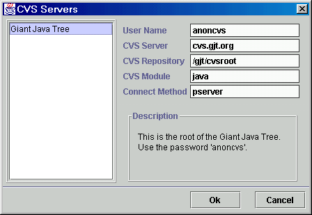

When you click on the 'Servers...' button, you will be presented with the dialog box shown below. Select the server you wish to connect to, and click the Ok button, and as many fields as possible will be filled in with the parameters that describe the repository defined by the selected server definition.
